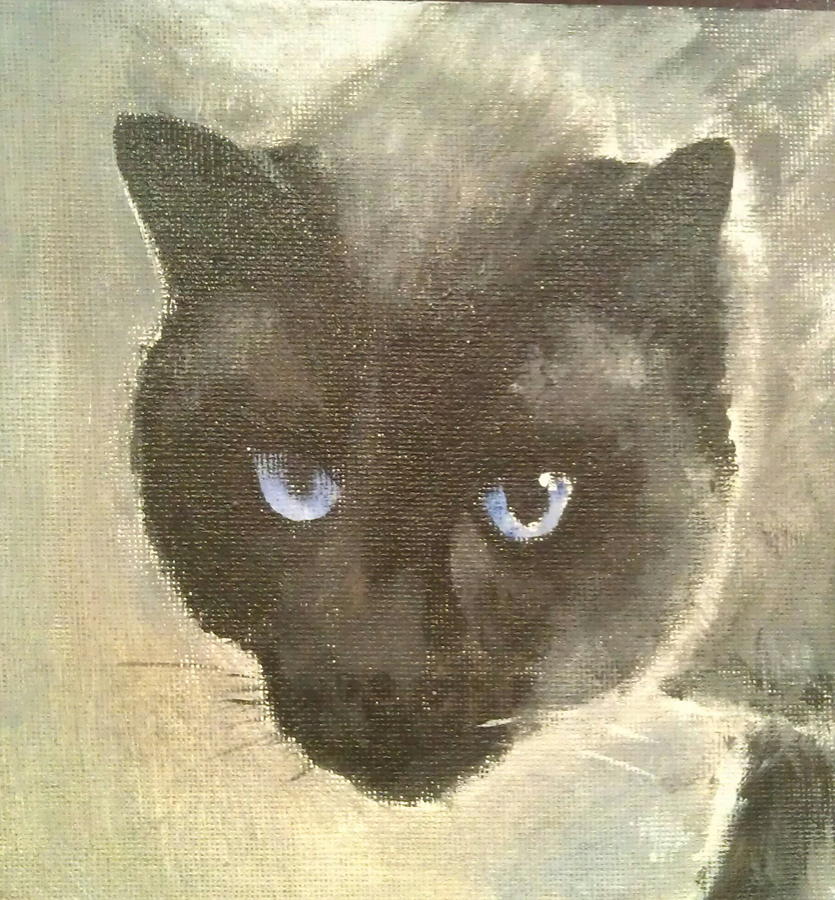

Learn Enough to Be Dangerous is a leader in the movement to teach technical sophistication, the seemingly magical ability to take command of your computer and get it to do your bidding. This includes everything from command lines and coding to guessing keyboard shortcuts, Googling error messages, and knowing when to just reboot the darn thing. We believe there are at least a billion people who can benefit from learning technical sophistication, probably more. To join our movement, sign up for our official email list now.
HTML was created by the original "web developer", computer scientist tim Berners-lee It's not true that Sir Tim invented HTML in order to share pictures of his cat, but it would be cool if it were
learn enough to be dangerous ia an out growth of ruby on rail tutorials and soft cover publishing platform Learn Enough HTML to Be Dangerous, which teaches the basics of HyperText Markup Language, the universal language of the World Wide Web. Other related tutorials can be found at learnenough.com.

Michael is the creator of the Ruby on Rails Tutorial and principal author of the Learn Enough to Be Dangerous introductory sequence. He is an advanced student of Krav Maga and has a three-step plan for world domination. Rumors that he's secretly a supervillain are slightly exaggerated.
You should follow Michael on Twitter here.

When he's not literally swimming with sharks or hunting powder stashes on his snowboard, you can find Lee in front of his computer designing interfaces, doing front-end development, or writing some of the interface-related Learn Enough tutorials.
You should follow Lee on Twitter here.

You may have seen him shredding guitar live with Capital Cities on Jimmy Kimmel, Conan, or The Ellen Show, but rest assured Nick is a true nerd at heart. He's just as happy shredding well-spec'd lines of code from a tour bus as he is from his kitchen table.
You should follow Nick on Twitter here.